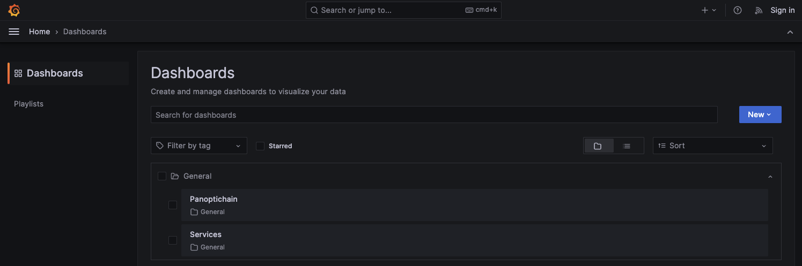

Quickstart: Run CDK-erigon locally with Kurtosis¶
Use this guide to deploy a local testnet instance of cdk-erigon using Kurtosis.
Prerequisites¶
Hardware/OS¶
- x86-64 architecture.
- Minimum 8GB RAM/2-core CPU.
- Linux-based OS (or WSL).
Software¶
- Docker Engine - version 4.27 or higher for MacOS.
- Kurtosis CLI
And, optionally, for submitting transactions and interacting with the environment once set up, we are using:
- Foundry
- yq (v3)
- jq
- polyon-cli
Quick setup¶
After installing the requirements you can launch a CDK chains with a oneliner:
Pesimistic Proof¶
kurtosis run --enclave cdk --args-file "https://raw.githubusercontent.com/0xPolygon/kurtosis-cdk/refs/heads/main/.github/tests/fork12-pessimistic.yml" github.com/0xPolygon/kurtosis-cdk
FEP¶
kurtosis run --enclave cdk github.com/0xPolygon/kurtosis-cdk
Extended Kurtosis environment setup¶
Understanding the deployment steps¶
There are two configuration files which help you understand what happens during a deployment.
1. main.star¶
The main.star file contains the step-by-step instructions for the deployment process. It orchestrates the setup of all the components in sequential order and pulls in any necessary logic from other files.
It defines the following steps for the deployment process:
| Step number | Deployments | Relevant Starlark code | Enabled by default |
|---|---|---|---|
| 1 | Deploy a local layer 1 Ethereum chain | ethereum.star | True |
| 2 | Deploy the CDK smart contracts on the L1 | deploy_zkevm_contracts.star | True |
| 3 | Deploy the central environment, prover, and CDK erigon or zkEVM node databases | databases.star | |
| 4 | Get the genesis file | n/a | False |
| 5 | Deploy the CDK central environment | cdk_central_environment.star | True |
| 6 | Deploy the CDK erigon package | cdk_erigon.star - included in step 4 deployment | True |
| 7 | Deploy the bridge infrastructure | cdk_bridge_infrastructure.star | True |
| 8 | Deploy the AggLayer | agglayer.star | True |
| 9 | Additional services | Explorers, reporting, permissionless zkEVM node | False |
| - | Input parser tool to help deployment stages | input_parser.star - deployed immediately | n/a |
| - | zkEVM pool manager tool | zkevm_pool_manager.star - deployed with CDK erigon node | n/a |
Warning
- The Kurtosis stack is designed for local testing only.
- The prover component is a mock prover and should never be used for production environments.
You can customize (or skip) any of the numbered steps by modifying the logic in the respective files.
2. input_parser.star¶
The input_parser.star file defines the default parameters of the chain and the deployment process.
It includes configurations for simple parameters such as the chain ID and more complex configurations such as the gas token smart contract address.
To customize the chain to your specific needs you need to create a new configuration file in your desired path, for example: ./params.yml
Run the chain locally¶
-
In the
kurtosis-cdkdirectory, use the kurtosis run command to deploy the chain on your local machine by executing themain.starscript provided with theparams.ymlconfiguration file:kurtosis run --enclave cdk github.com/0xPolygon/kurtosis-cdk -
This command typically takes a while to complete and outputs the logs of each step in the deployment process for you to monitor the progress of the chain setup. Once the command is complete, you should see the following output:
Starlark code successfully run. No output was returned. INFO[2024-10-17T10:56:06+02:00] ============================================ INFO[2024-10-17T10:56:06+02:00] || Created enclave: cdk || INFO[2024-10-17T10:56:06+02:00] ============================================ Name: cdk UUID: 0fb1ba8e87ad Status: RUNNING ========================================= Files Artifacts ========================================= ... List of files generated during the deployment process ... ========================================== User Services ========================================== ... List of services with "RUNNING" status - none should be "FAILED"! ...
The default deployment it’s a Full Execution Proofs setup that includes cdk-erigon as the sequencer, and cdk-node functioning as the sequence sender and aggregator.
You can verify the default versions of these components and the default fork ID by reviewing input_parser.star. You can check the default versions of the deployed components and the default fork ID by looking at input_parser.star.
- Customize the chain
To make customizations to the CDK environment create a kurtosis configuration file with your desired environment, for example:
Configure a CDK Sovereign chain¶
args:
consensus_contract_type: pessimistic
sequencer_type: erigon
erigon_strict_mode: false
agglayer_prover_sp1_key: REDACTED
enable_normalcy: true
Save this config to params.yml file, and then run:
# Delete all stop and clean all currently running enclaves
kurtosis clean --all
# Run this command from the root of the repository to start the network
kurtosis run --enclave cdk --args-file ./params.yml github.com/0xPolygon/kurtosis-cdk
- Inspect the chain
Get a feel for the entire network layout by running the following command:
kurtosis enclave inspect cdk
Interacting with the chain¶
Now that your chain is running, you can explore and interact with each component.
Below are a few examples of how you can interact with the chain.
Read/write operations¶
Let’s do some read and write operations and test transactions on the L2 with Foundry.
-
To facilitate the operations, export the RPC URL of your L2 to an environment variable called
ETH_RPC_URLwith the following command:export ETH_RPC_URL="$(kurtosis port print cdk cdk-erigon-node-001 rpc)" -
Use
castto view information about the chain, such as the latest block number:cast block-number -
View the balance of an address, such as the pre-funded admin account:
cast balance --ether 0xE34aaF64b29273B7D567FCFc40544c014EEe9970 -
Send simple transactions to the chain, such as a transfer of some ETH:
--private-key "0x12d7de8621a77640c9241b2595ba78ce443d05e94090365ab3bb5e19df82c625" cast send --legacy --value 0.01ether 0x0000000000000000000000000000000000000000
Load testing the chain¶
-
Use the
polycli loadtestcommand to send multiple transactions at once to the chain to test its performance:polycli loadtest --rpc-url "$ETH_RPC_URL" --legacy --private-key "$PK" --verbosity 700 --requests 50000 --rate-limit 50 --concurrency 5 --mode t polycli loadtest --rpc-url "$ETH_RPC_URL" --legacy --private-key "$PK" --verbosity 700 --requests 500 --rate-limit 10 --mode 2 polycli loadtest --rpc-url "$ETH_RPC_URL" --legacy --private-key "$PK" --verbosity 700 --requests 500 --rate-limit 3 --mode uniswapv3
Grab some logs¶
Add the service name to the following command to grab the logs you’re interested in.
kurtosis service logs cdk agglayer --follow
Open a shell on a service¶
To open a shell to examine a service, add the service name to the following command.
kurtosis service shell cdk contracts-001
jq . /opt/zkevm/combined.json
Viewing transaction finality¶
A common way to check the status of the system is by ensuring that batches are sent and verified on the L1 chain.
Use cast to view the progression of batches from trusted, virtual, and verified states:
cast rpc zkevm_batchNumber # Latest batch number on the L2
cast rpc zkevm_virtualBatchNumber # Latest batch received on the L1
cast rpc zkevm_verifiedBatchNumber # Latest batch verified or "proven" on the L1
Opening the bridge UI¶
To open the zkevm-bridge interface and bridge tokens across the L1 and L2, run the following command:
open $(kurtosis port print cdk zkevm-bridge-proxy-001 web-ui)
Additional services¶
There are a number of additional services you can add to the stack, including observability applications and other useful tools.
See the current list of additional services in the CDK kurtosis additional services documentation.
To add an additional service, simply add the name of the service to the params.yml array. For example:
args:
additional_services:
- blockscout
- prometheus_grafana
To use the additional service, simply add the service to a kurtosis call. For example, to open the Grafana dashboard once set up in params.yml, run the following command:
open $(kurtosis port print cdk-v1 grafana-001 dashboards)

Stopping the chain¶
If you want to stop the chain and remove all the containers, run the following command:
kurtosis clean --all
Going to production¶
While it is possible to run a CDK chain on your own, we strongly recommend getting in touch with the Polygon team directly, or one of our implementation providers for production deployments.
Advanced use cases¶
For a list of advanced use cases and documentation explaining how to set them up, please see the list in the Kurtosis CDK stack repo.
Further reading¶
- For more information on CDK architecture, components, and how to customize your chain, refer to the CDK architecture documentation.
- For detailed how to’s, including how to create a native token, check out our how to guides.
- For detailed conceptual information on zero-knowledge stacks, check out our concepts documentation.